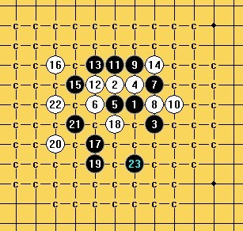

黑胜一小题（斜月）
首页
茗弈阁
#1 <font color="red">黑胜一小题（斜月）</font> 作者：自来水 发表时间：2012-1-19 14:57:42
逛论坛看到的ShowPost.asp?ThreadID=17060
以上原图，退至白16如下。
这里黑其实已经必胜，各位朋友可以试试~
注：不是VCT问题...
［ 逆刃 于 2012-1-19 16:25:33 时花20金币送鲜花一朵］
［ 茗弈宽容 于 2012-1-19 17:01:40 时花20金币送鲜花一朵］
［ 丁香花开 于 2012-1-20 0:05:45 时花20金币送鲜花一朵］
［ 弱惜 于 2012-1-20 19:07:51 时花20金币送鲜花一朵］
［此帖子已被 屏蔽 在 2012-1-21 9:50:28 编辑过］
［ 屏蔽 于 2012-1-21 9:50:52 时奖励此帖[金币加 100 威望加1］
#2 Re:黑胜一小题（斜月） 作者：逆刃 发表时间：2012-1-19 16:27:48
感觉这样可以。
［ 自来水 于 2012-1-19 20:13:09 时花20金币送鲜花一朵］
［ 自来水 于 2012-1-19 20:13:23 时花20金币送鲜花一朵］
#3 Re:黑胜一小题（斜月） 作者：逆刃 发表时间：2012-1-19 16:31:05
刚刚黑石看了下，好像没有看到强防。不知道LZ是否是这样杀的？
#4 Re:黑胜一小题（斜月） 作者：小元 发表时间：2012-1-19 16:40:46
杀法不唯一吧
#5 Re:黑胜一小题（斜月） 作者：茗弈宽容 发表时间：2012-1-19 17:02:32
臭弟弟考得如何？也不给老姐汇报下成绩！新年快乐弟弟！
#6 Re:黑胜一小题（斜月） 作者：屏蔽 发表时间：2012-1-19 18:23:18
 w14.rar
w14.rar
黑必胜 =w=
［ 自来水 于 2012-1-19 20:12:19 时花20金币送鲜花一朵］
［ 自来水 于 2012-1-19 20:12:31 时花20金币送鲜花一朵］
［ 自来水 于 2012-1-19 20:12:54 时花20金币送鲜花一朵］
#7 Re:黑胜一小题（斜月） 作者：侯军学棋 发表时间：2012-1-19 19:48:02
这个22没扫掉
#8 Re:黑胜一小题（斜月） 作者：自来水 发表时间：2012-1-19 20:10:29
 先上个人答案
先上个人答案
白棋没有什么别的选择，本来打算就这样。
然后看到各楼回复...感觉我被出题了
回2L及3L：
不会杀
回5L：Q你么有反应..
回6L：
?［此帖子已被 自来水 在 2012-1-19 20:15:18 编辑过］
#9 Re:黑胜一小题（斜月） 作者：屏蔽 发表时间：2012-1-19 21:40:48
 拆了几下解决不掉，果断撒手不管
拆了几下解决不掉，果断撒手不管
#10 Re:黑胜一小题（斜月） 作者：侯军学棋 发表时间：2012-1-19 21:50:15


#11 Re:黑胜一小题（斜月） 作者：自来水 发表时间：2012-1-19 22:24:52
 既然这样，谁给的套路谁负责。。我也不管了
既然这样，谁给的套路谁负责。。我也不管了
#12 Re:Re:黑胜一小题（斜月） 作者：屏蔽 发表时间：2012-1-19 23:19:41
引用：
原文由 自来水 发表于 2012-1-19 22:24:52 :
既然这样，谁给的套路谁负责。。我也不管了
逆刃 上
#13 Re:Re:黑胜一小题（斜月） 作者：丁香花开 发表时间：2012-1-20 0:05:17
引用：
原文由 自来水 发表于 2012-1-19 22:24:52 :
既然这样，谁给的套路谁负责。。我也不管了
晕倒
#14 Re:黑胜一小题（斜月） 作者：自来水 发表时间：2012-1-20 9:10:07
昨天的问题，一觉醒来发现解决了，逆刃的走法（上面先不活三）不能与之通用。。。已经两套杀了就不研究了吧。
［此帖子已被 自来水 在 2012-1-20 9:15:40 编辑过］
［ 屏蔽 于 2012-1-20 9:27:04 时花20金币送鲜花一朵］
#15 Re:黑胜一小题（斜月） 作者：逆刃 发表时间：2012-1-21 9:08:25
什么情况？解决了没？昨天在回家火车上度过了一天。
#16 Re:黑胜一小题（斜月） 作者：自来水 发表时间：2012-1-21 9:24:06
这个已经解决。顺便，我的杀法前面贴了19上面不活三对下面进攻不利的样子，你的还是...自己解决吧［此帖子已被 自来水 在 2012-1-21 9:25:47 编辑过］
#17 Re:黑胜一小题（斜月） 作者：屏蔽 发表时间：2012-1-21 9:47:14
以必胜为目的的拆棋不会考虑之后的反击，攻崩了就攻崩了。
所以一般来说一个眠三比一个活二更有用，因为先手更强，而且多了做杀的手段。
因此可能的话会在正式进攻前多些准备工作。
［此帖子已被 屏蔽 在 2012-1-21 9:48:19 编辑过］
#18 Re:黑胜一小题（斜月） 作者：屏蔽 发表时间：2012-1-21 9:51:40
主题价值不错 兼具理论和实战价值 奖
（除了10L之外
#19 Re:黑胜一小题（斜月） 作者：蹲街丶式寂寞 发表时间：2012-1-21 18:04:03
这是报复。10L被点名了。是发现了大师的漏洞
#20 Re:Re:黑胜一小题（斜月） 作者：屏蔽 发表时间：2012-1-21 18:55:37
引用：
原文由 蹲街丶式寂寞 发表于 2012-1-21 18:04:03 :
这是报复。10L被点名了。是发现了大师的漏洞
你要用多么狭隘的心灵才能看出这么狭隘的想法
#21 Re:黑胜一小题（斜月） 作者：蹲街丶式寂寞 发表时间：2012-1-21 19:47:58
犀利。
#22 Re:黑胜一小题（斜月） 作者：逆刃 发表时间：2012-1-22 10:24:32
我已经到家了，自己的电脑没带，没软件，就不拆了。以后要是有机会再看看吧。既然你们这么多高手都拆不出，我想我也没有太大的必要去弄了。提出路线仅仅是当时自己的第一感觉，没有细拆过，没有想到大家都非常认真对待，呵呵。我现在已经很少拆棋了。
#23 Re:Re:黑胜一小题（斜月） 作者：逆刃 发表时间：2012-1-27 18:07:44
回14L和16L。
在家打谱不方便，还不能保存，黑石和终结者都是才问别人要的。就发几个截图吧。

［ 自来水 于 2012-1-27 18:59:08 时花20金币送鲜花一朵］
［ 自来水 于 2012-1-27 19:02:14 时花20金币送鲜花一朵］
#24 Re:黑胜一小题（斜月） 作者：自来水 发表时间：2012-1-27 19:03:51
结果后面杀法还是一样了
#25 Re:黑胜一小题（斜月） 作者：逆刃 发表时间：2012-1-27 19:11:22
就是按照LS的杀法杀的，我看14L说不能通用就试了试，发现一样的。